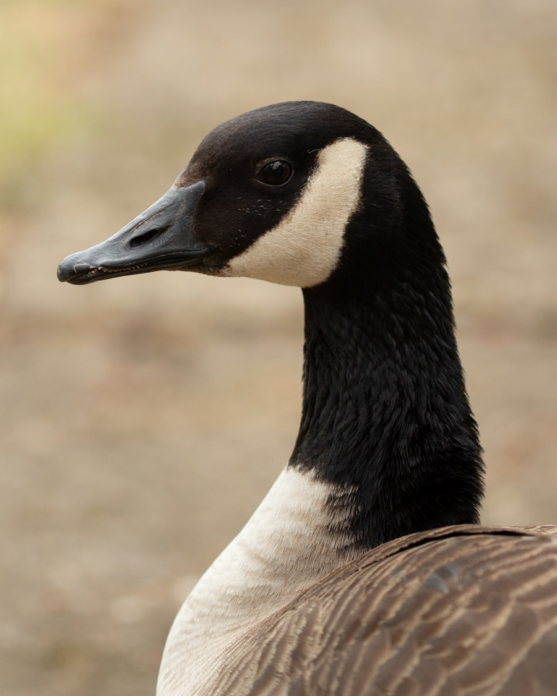
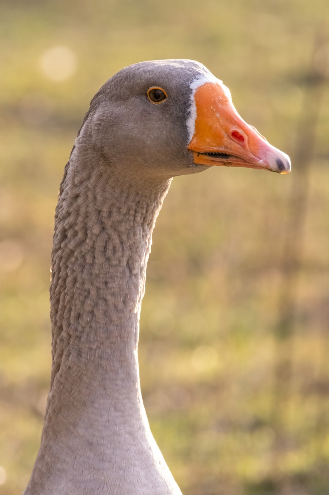
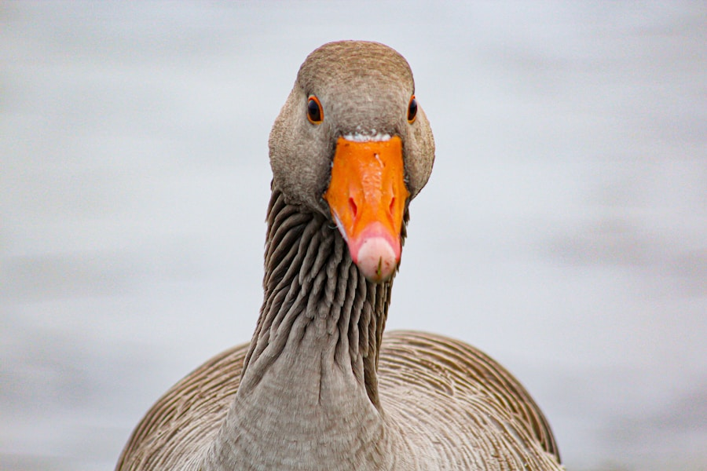
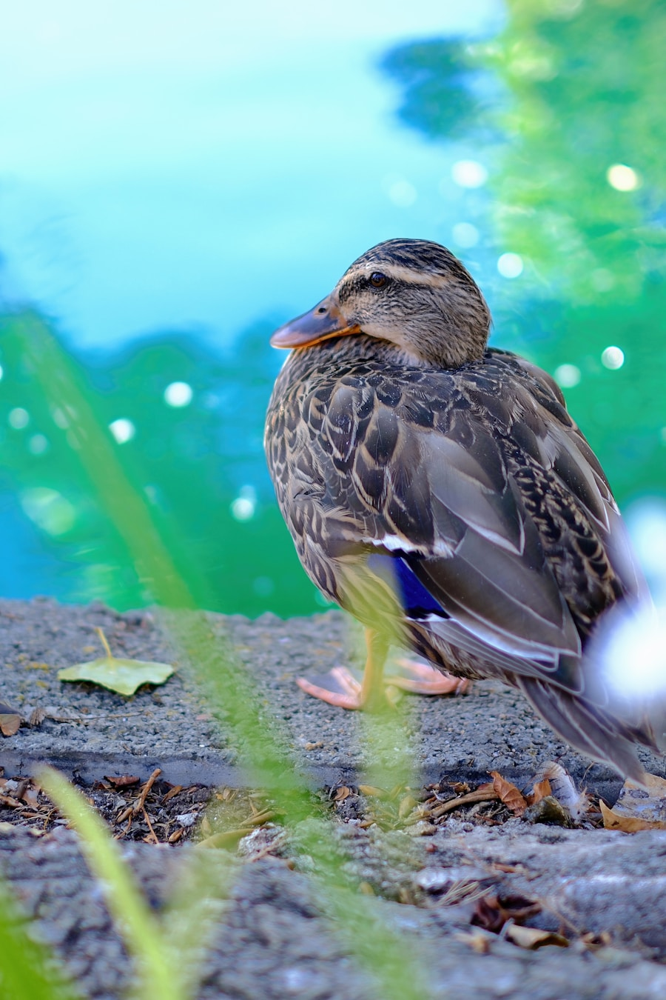

Willow ♡
Recovering from a wing injury and growing stronger every day.
Every animal has a story
Some are healing. Some are waiting for families. Some have found a lifelong home at the Haven. Every one receives care shaped around their individual needs.
Ask about an animal ♡
A few Haven stories
From new arrivals to sanctuary residents, each animal has a different path forward.

Recovering from a wing injury and growing stronger every day.

A gentle permanent resident who loves quiet mornings and fresh greens.

Rescued as a youngster and now thriving with specialized daily care.

Healed, regained strength, and returned to the water where she belongs.

The newest patient, currently resting while Crystal completes an assessment.
NEED INFO: REPLACE THESE SAMPLE NAMES, PHOTOS, STATUSES, AND STORIES WITH CURRENT ANIMALS BEFORE PUBLISHING.
Every path matters
Explore the different ways animals move through the Haven.
Animals who are healthy and ready to find the right permanent family.
Ask about adoption →Patients receiving medical care, rehabilitation, rest, and time.
Support their care →Success stories from animals released, reunited, or adopted.
Ask about their stories →Animals receiving a safe and loving lifelong home.
Sponsor a resident →Reptile care partner
DubiaRoaches.com supports the Haven's reptiles by providing feeder insects when reptiles are in Crystal's care. Their generosity helps the Haven direct more resources toward medical care, habitats, and other urgent needs.
Help write the next chapter
Your support helps provide food, formula, medicine, habitats, and individualized care.